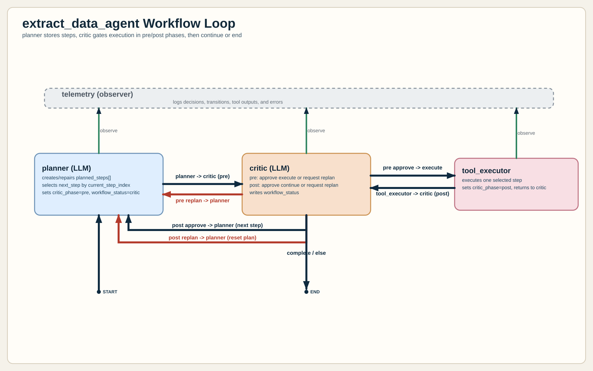

downloader_from_datalake
Downloads MinIO objects under a prefix into local storage.
Inputs: bucket, prefix, local_dir
Output highlights: downloaded_files, message
This page explains the runtime loop for extract_data_agent, then dives into
the tool_executor node and every tool exposed by Toolset.registry().
The diagram below is the current workflow reference.

Animated terminal capture of the end-to-end extract_data_agent execution.
planner (LLM): builds or repairs planned_steps, selects next_step, and sends to pre-check.critic (LLM, pre): either approves execution or requests replan before any tool runs.tool_executor: executes exactly one selected tool step, updates state, then returns to critic post-check.critic (LLM, post): either continue with planner for next step or replan.telemetry: logs decisions, transitions, tool outcomes, and failures across all nodes.
The executor is a single-step runtime node in extract_data_agent/executor.py.
It does not plan. It resolves one tool call, runs it, normalizes outputs, and writes state for the next critic phase.
next_step from planner output and resolves $context_key references in step input.tool.invoke(payload) or callable fallback.result["error"].downloaded_files, derives excel_files automatically.executed_steps, advances current_step_index, sets critic_phase="post", and routes back to critic.workflow_status="critic", critic_phase="post"last_tool_result, last_executed_tool, executed_steps, step_messagesexcel_files, excel_rows_text, products_dict, product_table_rows, product_imagesingest_result and ingest_images_resultThe registry exposes 9 tools. The executor receives a tool name from planner, resolves inputs, and executes the matching tool.
Downloads MinIO objects under a prefix into local storage.
Inputs: bucket, prefix, local_dir
Output highlights: downloaded_files, message
Reads spreadsheets and normalizes sheet rows into text blocks by file and sheet.
Inputs: excel_files
Output highlights: excel_rows_text, message
Extracts embedded Excel images and maps each image to a top-level section via row proximity.
Inputs: excel_files, target_sections, optional output_dir
Output highlights: images_by_section, images, output_dir
Translates parsed spreadsheet text to English while preserving workbook structure.
Inputs: excel_rows_text
Output highlights: updated excel_rows_text, message
Extracts and normalizes section/subsection key-value facts according to the target schema.
Inputs: excel_rows_text, target_sections, target_section_schema
Output highlights: products_dict, product_table_rows
Assigns extracted images to section/subsection buckets and prepares image ingestion rows.
Inputs: excel_files, target_section_schema, optional products_dict, optional output_dir
Output highlights: product_images
Ensures table exists and ingests normalized fact rows into product_facts.
Inputs: product_table_rows
Output highlights: inserted_rows, table, run_id
Ensures table exists and ingests prepared image rows into product_images.
Inputs: product_images
Output highlights: inserted_rows, table, run_id
Returns row count for a target table in the configured ClickHouse database.
Inputs: table (default: product_facts)
Output highlights: table, row_count